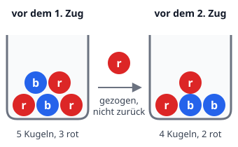

Ziehen ohne Zurücklegen
Mit einem KI-Tutor lernen
Ein KI-Tutor erklärt dir diese Seite und hilft dir bei den Aufgaben. Wähl deinen Assistenten:
Mit Claude öffnen Mit ChatGPT öffnen Mit Mistral Vibe öffnen
Du nutzt dein eigenes Konto beim Anbieter. Der Assistent ist kein Angebot von lernapps.net: lernapps liefert nur Inhalte und Aufgaben. Die Wahl gilt für alle Seiten, nur auf diesem Gerät.
Ziel: Ich kann beim Ziehen ohne Zurücklegen die Wahrscheinlichkeiten anpassen. Du brauchst dafür das Baumdiagramm und die Pfadregeln aus dem Kapitel Wahrscheinlichkeit. Dort wurde jede Kugel zurückgelegt.
Probier zuerst
Aufgabe
Lösung
3/5
Die rote Kugel fehlt jetzt in der Urne.
2/5
2 rote stimmt, aber es sind nur noch 4 Kugeln da.
1/2 richtige Antwort
Noch 4 Kugeln, 2 davon rot: 2/4 = 1/2.
3/4
3/4 passt, wenn zuerst eine blaue Kugel kam.
Übrig sind 2 rote und 2 blaue Kugeln: P(rot) = 2/4 = 1/2.
Die Urne verändert sich
Nach dem 1. Zug fehlt eine Kugel: Es sind nur noch 4 Kugeln in der Urne, und eine rote weniger. Darum ist die Wahrscheinlichkeit für Rot im 2. Zug 2/4 = 1/2 – wie in der Aufgabe oben.

Vergleiche die beiden Urnen. Was ist im 2. Zug anders – die Zahl aller Kugeln und die Zahl der roten?
Quelle: eigene Zeichnung. Lizenz: CC-BY-4.0.War die erste Kugel blau, sind danach 3 rote und 1 blaue Kugel übrig. Die 2. Stufe des Baums hängt also vom 1. Zug ab: Der Nenner ist überall um 1 kleiner. Der Zähler ist nur bei der Farbe kleiner, die schon gezogen wurde.

Unter r und unter b stehen verschiedene Brüche. An jedem Knoten ergeben die Äste zusammen 1.
Quelle: eigene Zeichnung. Lizenz: CC-BY-4.0.Mit Zurücklegen wäre . Die Pfadregeln bleiben gleich, nur die Brüche der 2. Stufe ändern sich.
Ein Beispiel
Zwei Gewinne aus der Lostrommel
In einer Lostrommel sind 10 Lose, 2 davon Gewinne. Du ziehst nacheinander zwei Lose. Wie wahrscheinlich sind zwei Gewinne? Nach dem ersten Gewinn sind noch 9 Lose da, aber nur 1 Gewinn. TT heißt: zweimal ein Treffer (Gewinnlos).
Antwort – Die Wahrscheinlichkeit ist 1/45. Der Haken: Mit 2/10 · 2/10 = 1/25 wäre sie fast doppelt so groß. Ein gezogenes Los kommt aber nicht zurück in die Trommel.
Der Nenner wird kleiner
Merke
Ohne Zurücklegen ist im 2. Zug der Nenner um 1 kleiner – und der Zähler der Farbe, die schon gezogen wurde, auch. Wer den alten Nenner behält, rechnet so, als läge die Kugel noch in der Urne. Prüfe an jedem Knoten: Die Äste ergeben zusammen 1.
Jetzt du
Aufgabe
Lösung
3/7
Es fehlt eine Kugel.
2/7
2 blaue stimmt, aber der Nenner ist auch kleiner.
1/2
3/6 hieße: noch 3 blaue. Eine ist aber gezogen.
1/3 richtige Antwort
Noch 2 blaue unter 6 Kugeln: 2/6 = 1/3.
Nach blau sind 4 rote und 2 blaue übrig: P(blau) = 2/6 = 1/3.
Aufgabe
Drei Beispielaufgaben, jede mit ihrer Lösung:
Aufgabe Nr. 1
In einer Urne liegen 5 rote und 3 blaue Kugeln. Du ziehst zweimal ohne Zurücklegen. Wie wahrscheinlich ist zweimal rot?
Tipp
Wie viele Kugeln, wie viele rote sind nach dem 1. Zug noch da?
Lösung
- 1. Zug rot: 5/8. Danach liegen noch 7 Kugeln in der Urne, 4 davon rot: 4/7.
- Entlang des Pfades multiplizieren: 20/56, gekürzt 5/14.
Richtige Antwort: 5/14
Aufgabe Nr. 2
In einer Urne liegen 4 rote und 3 blaue Kugeln. Du ziehst zweimal ohne Zurücklegen. Wie wahrscheinlich ist zweimal rot?
Tipp
Wie viele Kugeln, wie viele rote sind nach dem 1. Zug noch da?
Lösung
- 1. Zug rot: 4/7. Danach liegen noch 6 Kugeln in der Urne, 3 davon rot: 3/6.
- Entlang des Pfades multiplizieren: 12/42, gekürzt 2/7.
Richtige Antwort: 2/7
Aufgabe Nr. 3
In einer Urne liegen 6 rote und 2 blaue Kugeln. Du ziehst zweimal ohne Zurücklegen. Wie wahrscheinlich ist zweimal rot?
Tipp
Wie viele Kugeln, wie viele rote sind nach dem 1. Zug noch da?
Lösung
- 1. Zug rot: 6/8. Danach liegen noch 7 Kugeln in der Urne, 5 davon rot: 5/7.
- Entlang des Pfades multiplizieren: 30/56, gekürzt 15/28.
Richtige Antwort: 15/28
Aufgabe
Drei Beispielaufgaben, jede mit ihrer Lösung:
Aufgabe Nr. 1
In einer Schachtel liegen 5 Lose, 2 davon sind Gewinne. Du ziehst nacheinander 2 Lose ohne Zurücklegen. Wie wahrscheinlich sind zwei Gewinne? Gib die Antwort in Prozent an, sie geht auf.
Tipp
Wie viele Lose und Gewinne sind nach dem ersten Gewinn noch da?
Lösung
- 1. Los Gewinn: 2 von 5. Danach sind noch 5 − 1 Lose da, davon 2 − 1 Gewinne.
- ergibt 10 %.
Richtige Antwort: 10 %
Aufgabe Nr. 2
In einer Schachtel liegen 5 Lose, 3 davon sind Gewinne. Du ziehst nacheinander 2 Lose ohne Zurücklegen. Wie wahrscheinlich sind zwei Gewinne? Gib die Antwort in Prozent an, sie geht auf.
Tipp
Wie viele Lose und Gewinne sind nach dem ersten Gewinn noch da?
Lösung
- 1. Los Gewinn: 3 von 5. Danach sind noch 5 − 1 Lose da, davon 3 − 1 Gewinne.
- ergibt 30 %.
Richtige Antwort: 30 %
Aufgabe Nr. 3
In einer Schachtel liegen 10 Lose, 9 davon sind Gewinne. Du ziehst nacheinander 2 Lose ohne Zurücklegen. Wie wahrscheinlich sind zwei Gewinne? Gib die Antwort in Prozent an, sie geht auf.
Tipp
Wie viele Lose und Gewinne sind nach dem ersten Gewinn noch da?
Lösung
- 1. Los Gewinn: 9 von 10. Danach sind noch 10 − 1 Lose da, davon 9 − 1 Gewinne.
- ergibt 80 %.
Richtige Antwort: 80 %
Aufgabe
Lösung
9/25
6/10 · 6/10 – als käme das erste zurück.
1/3 richtige Antwort
Erst 6 von 10, dann 5 von 9.
3/10
6/10 · 5/10 – es sind aber nur noch 9 in der Tüte.
2/5
6/10 · 6/9 – es sind aber nur noch 5 grüne da.
6/10 · 5/9 = 30/90 = 1/3.
Als Nächstes übersetzt du Ereignisse wie „genau einmal rot“ oder „mindestens einmal rot“ in Pfade des Baums.
Fehler gefunden oder eine Idee für diese App?